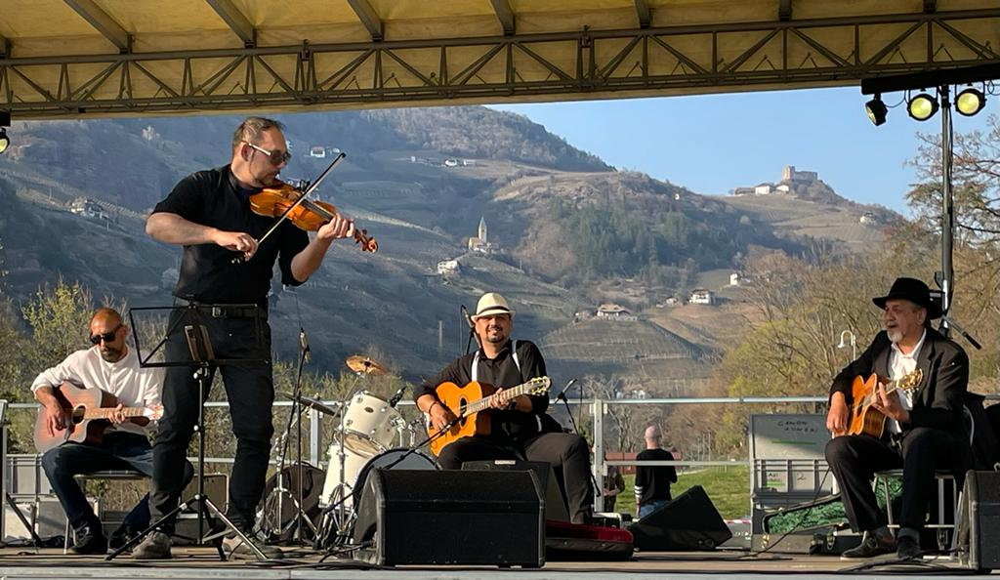

Stories and Memories of Sinti Estraixaria:
A Look at the Past and Present of a Dynasty of Musicians
Antonella Dicuonzo
Department of History, Archaeology, Geography, Fine and Performing Arts (SAGAS), University of Florence, Italy
Correspondence: antonella.dicuonzo@unifi.it
Abstract
Sinti Estraixaria (“Austrians”) represent one of the
minorities that make up the peculiar cultural landscape of Trentino-Alto
Adige, in north-eastern Italy. In this border area – the last western
offshoot of what was once the Austro-Hungarian Empire – Sinti families,
characterised by a certain degree of mobility, have progressively
settled over the last two centuries, while continuing in part to
practice crafts of an itinerant nature. Among these, music has
traditionally played a prominent role, consolidating itself as a
knowledge that – handed down from father to son – has given rise to
veritable “dynasties” of players. Between the Sixties and the Eighties
of the 20th century, the ingenuity of certain family musical ensembles
ensured that the “craft of the musician” took shape as a “profession” –
with even fortunate results for certain periods – although then the
world of Gage, with its “rules” and bureaucracy, presented these protagonists with challenges that were in some ways insurmountable.
Today, music for young and old Sinti who in the meantime have become
gardeners, waiters, iron pickers and mechanics, remains, rather than a
profession, a heritage from the past. However, music contributes
strongly to their own identity construction: although the moments of
shared musical practice have become more sparse – more and more reserved
for spectacular contexts in the sphere of a few events very often
organised by the Sinti cultural associations themselves – a dialogical
dimension nevertheless remains alive, which focuses on the evocation of
an almost “mythical” past populated by exceptional musicians. Starting
from the dialogue with some of these witnesses of ancient and modern
times, a broader family and community history deeply linked to musical
activity will be reconstructed; specifically, the present paper will
focus on how the protagonists of said story, members of one of the most
musically active families in the last sixty years, keep alive the memory
of their musical past and constantly confront the latter with their
present. At the same time, the paper aims to highlight how their musical
competence matured within such a “community of practice” (see Wenger
1999), and the dialogical dimension that music is able to stimulate,
come to configure themselves as key instruments also from the point of
view of the analysis and interpretation of sound documents from the
past, making ethnomusicological investigation itself a field of
exchange, knowledge and collaboration.
Italian Abstract
Storie e memorie dei sinti estraixaria: uno sguardo al passato e al presente di una dinastia di musicisti
I sinti estraixaria (“austriaci”) rappresentano una delle
minoranze che compongono il peculiare paesaggio culturale del
Trentino-Alto Adige, nell’Italia nord-orientale. In quest’area di
confine – ultima propaggine occidentale di quello che fu l’Impero
austro-ungarico – le famiglie sinte, caratterizzate da una certa
mobilità, si sono progressivamente insediate nel corso degli ultimi due
secoli, continuando in parte a praticare mestieri di natura itinerante.
Tra questi, la musica ha tradizionalmente avuto un ruolo di primo piano,
consolidandosi come un sapere che – tramandato di padre in figlio – ha
dato origine a vere e proprie “dinastie” di suonatori. Tra gli anni
Sessanta e gli anni Ottanta del Novecento, l’ingegno di alcune
formazioni musicali familiari ha fatto sì che il “mestiere del
musicista” si configurasse come una “professione” – con risultati anche
fortunati, per alcuni periodi – sebbene poi il mondo dei gage, con le sue “regole” e la sua burocrazia, abbia posto questi protagonisti di fronte a sfide per certi versi insormontabili.
Oggi la musica, per i sinti giovani e anziani che nel frattempo sono
diventati operai, giardinieri, camerieri, raccoglitori di ferro vecchio e
meccanici, rimane, più che una professione, un’eredità del passato.
Tuttavia, essa contribuisce fortemente alla loro costruzione
identitaria: sebbene i momenti di pratica musicale condivisa siano
diventati più radi – sempre più riservati a contesti spettacolari
nell’ambito di pochi eventi molto spesso organizzati dalle stesse
associazioni culturali sinte – rimane comunque viva una dimensione
dialogica che si concentra sull’evocazione di un passato quasi “mitico”,
popolato da musicisti d’eccezione. Partendo dal dialogo con alcuni di
questi testimoni di tempi antichi e moderni, si ricostruirà una più
ampia storia familiare e comunitaria profondamente legata all’attività
musicale; nello specifico, il presente lavoro si concentrerà su come i
protagonisti di questa storia, membri di una delle famiglie musicalmente
più attive degli ultimi sessant’anni, mantengano viva la memoria del
loro passato musicale e lo confrontino costantemente con il loro
presente. Allo stesso tempo, il contributo intende evidenziare come la
competenza musicale maturata all’interno di tale “comunità di pratica”
(cfr. Wenger 1999), e la dimensione dialogica che la musica è in grado
di stimolare, vengano a configurarsi come strumenti chiave anche dal
punto di vista dell’analisi e dell’interpretazione di documenti sonori
del passato, rendendo l’indagine etnomusicologica stessa un terreno di
collaborazione, conoscenza e scambio.
In today’s Trentino-Alto Adige, a territory located on the
north-eastern border of the Italian peninsula, the Sinti represent one
of the historical minorities, although not yet officially recognised as
such. Their families have in fact been present in this geographical area
for several generations, and according to Leonardo Piasere ([2004]
2021: 19), who reports that between the 19th and 20th centuries groups
of Austrian and German origin (Sinti Estraixaria, Krasaria, Gaćkane)
settled in north-eastern Italy, several Sinti boast ancient Austrian
and more generally “Austro-Hungarian” ancestry – as also recalled by
some of their surnames, which are German or of clearly Germanic origin.
The research that led me to approach the cultural world of the Sinti
in this region actually began in the archives. In 2017, I became
interested in the musical practices of Roma and Sinti in Italy – a field
of research that has been investigated very little in my country
despite the presence of even ancient communities – and I searched for
historical recordings attesting to Romani vocal and/or instrumental
performances in what is considered the most important database of music
of oral tradition in Italy, namely the Archivi di Etnomusicologia (AEM)
of the Accademia Nazionale di Santa Cecilia (Rome). Among the many
collections – that result from research campaigns that have taken place
since the late 1940s – I was able to isolate five whose tracks were
attributable to Roma or Sinti performers. To one of these (collection
093) – particularly relevant because it contains recordings made by
Diego Carpitella and Giorgio Nataletti on the occasion of the first
international pilgrimage of nomads that took place in Pomezia (Rome,
1965) under the pontificate of Paul VI – I then dedicated a large part
of my doctoral thesis, articulating the entire work around a dialogue
between past and present, historical recordings and the voices of
contemporary witnesses.
It was while listening to the tracks of the collection 093 – for each of which 40-second snippets are available online –1 that I first encountered the Estraixaria
(“Austrians”). These Sinti define themselves by referring to the
territories they inhabited and within which they moved: in the metadata
of the audio tracks in this collection,2
which in themselves contain rather scanty information, the attribution
of the performances to “members of the Histraiharia [or ‘Hestraiharia’]
tribe, from Bolzano”3 appears with some frequency.4
This annotation is curious since it is also applied – as I later
ascertained – to chants in the Slovene and Serbo-Croatian (languages
that the Estraixaria do not normally speak) or to performances that in
any case refer – even from what one perceives at first listening – to
quite diversified musical settings. To “put things in order,” it was
therefore necessary to move from the archive to the field, and it was
here that, thanks to my interlocutors’ initial involvement in the
philological investigation of sound documents, I came into contact with a
world full of fascination and stories linked to their musical past.
Earlier studies, such as Tauber 2006, have only hinted at the musical
practices of Sinti Estraixaria in part (see below), mainly
investigating other crucial aspects of their culture such as the flight
marriage, the concept of “respect” and the relationship with ancestors –
a topic, the latter, also masterfully developed in Williams’ ([1993]
2020) work on the French Mānuš of the northern Massif Central. Instead,
this contribution intends to focus on the musical practices of the
Estraixaria, highlighting the use of shared listening – between
researcher and research protagonists – as a methodology of
investigation. In this specific case, sharing the listening of
historical recordings proved fruitful both in terms of interpreting
documents from the past and facilitating ethnographic dialogue
concerning the present of community members as well.
In the following pages, I will highlight some key moments from my
dialogue with members of Radames Gabrielli’s family and delve into
certain aspects of the subsequent analysis of the recordings under
investigation. A musician born in Bolzano in 1958, Radames represents in
his family the fourth generation of those born in these territories:
his great-grandfather was born in Laces, in the Lower Vinschgau, while
his ancestors – originally called Adelsburg – came from the Austrian
town Kremsmünster. On both his father’s and mother’s side, his relatives
were mostly musicians (Radames Gabrielli, interview by the author, 3
August 2021). Son of the great violinist “Balino,” one of the founders
of the historic musical group Figli del Vento (“Sons of the Wind,” see
below), Radames played for decades with his father and his brothers
Gianfranco aka “Memè” and Armando aka “Ves” in the family band I Sinti
del Tzardas. Mirko – a second cousin and brother-in-law of Radames,
since he married his sister Liliana, known as “Ala” – also dedicated his
life to music, and his voice will appear in the following pages.
Finally, the testimonies of younger musicians will also be included:
Robert “Sereno” Gabrielli, a guitarist born in 1981 and son of the
guitarist “Ves” Gabrielli, and Lahi “Lucky” Colombo Gabrielli, son of
the singer and violinist “Memè” Gabrielli. Lucky, born in 1978, has a
real talent for music and is currently a soloist on both the violin and
guitar (see Figure 1).

Figure 1. “Respect
& Plurality 2022.” From left to right: Matthew (Radames’s son),
Lucky, Sereno and Ves (photograph by the author, 26 March 2022).
From the Sounds of the Past to the Voices of the Present
In August 2018, I moved to Bolzano, initially for circumstances
unrelated to my doctoral research, although the South Tyrolean capital
itself later became my main field of investigation. At the time, I had
already carried out a preliminary perusal of the recordings contained in
the 093 collection and the materials accompanying it;5
I had also conducted some summary research on the composite community
inhabiting these territories: Sinti who identify themselves in different
self-denominations,6
among whom the Estraixaria – repeatedly and erroneously cited in the
collection’s data sheets as Histraiharia/Hestraiharia – are in the
majority. Musical activity is still a widespread practice among the
Sinti populating the region and among the Estraixaria in particular,
although mostly reduced to spectacular contexts and in any case to a few
annual events very often organised by the same Sinti cultural
associations to raise public awareness. At first glance, the role that
music plays for these Sinti today is quite different than in the past,
when it traditionally represented one of the main sources of livelihood
for Sinti families: even today, old people tell of how in the past music
was used to earn a living, playing outside the houses of the Gage7 and learning to handle instruments from a very early age.
Today, outside sporadic public performances – which sometimes include
practice moments a few days before the performance to brush up the
pieces of the repertoire – musical practice in the family environment is
limited to festive events, funeral ceremonies and learning moments.
While in the context of private parties live music is nowadays
increasingly being replaced by karaoke, for funerals the tradition of
playing music to honour the deceased remains, either in church – if he
or she was of Catholic faith – or at the cemetery, for Catholic and/or
Evangelical faith. Regarding learning, young people who show an interest
in instrumental practice (mostly the guitar) become familiar with the
instruments of their parents, grandparents and uncles, which are always
at hand. However, if even their parents and grandparents have already
become labourers, gardeners, waiters, old iron pickers and mechanics,
the new generations generally do not view music as a possible full-time
job as it was – for certain periods – for their ancestors, and therefore
their assiduity in practising also suffers. The learning itself is an
exercise that mostly takes place in solitude: an experienced player
shows the first chords or musical phrasing – depending on whether the
apprentice’s vocation is as an accompanist or soloist – for the study of
a piece and only when the young boy has practised enough to learn them
will the “maestro” show him the rest. Boys are generally not allowed to
perform in public with adults, but it may happen that they are called on
stage to perform a song once they have learnt it. Men’s musical
ensembles, for their part, are always family ensembles and have a fluid
nature: as far as I have been able to observe, their composition is the
result of contingencies of the moment, ranging from personal
availability to more or less good relations with family members, from
the need to have a little extra financial income to the renunciation of a
concert performance because one has suffered a bereavement, thus in
respect for the dead. This is why musical ensembles are variable in
their numerical composition, but also regarding the musicians that make
them up, who are in fact replaceable with other relatives.
My relationship with some Estraixaria musicians began when I met
Radames Gabrielli, president of the association Nevo Drom (“New Road”)
and the main promoter of concerts and events involving musicians mostly
from the provinces of Trento and Bolzano. In March 2019, I had gone to
attend a concert to which Radames had invited me and which was held in
the central and famous Piazza Walther. It was the final show of the 3rd
edition of “Respect & Plurality,” an event organised by Nevo Drom,
that year in collaboration with the Alexander Langer Foundation, as part
of the 15th anti-racism week. On stage, some musicians from his family
were performing songs from their traditional repertoire, when at one
point the leader of the band, seeing his cousin passing by, announced in
a joking tone: “Now I’m going to do a nice song dedicated to a fan of
mine. . . A beautiful song from her times, when we
were. . . she knows where we were – our places – [she knows]
the Sinti we were.” To my surprise, I immediately recognised that song:
it was a more rhythmic, modern version of “Prekarik u pani” (Nataletti and Carpitella 1965b)
– “a song that will be two hundred years old,” as the Sinti use to say,
and which was also recorded in Pomezia in 1965, becoming the second
audio track of the collection 093.
This occurrence unexpectedly allowed me to glimpse a fil rouge
between the recordings I had found in the archive and the ethnographic
present. I was therefore all the more convinced that engaging in
dialogue with the witnesses of the present – Sinti and Roma, whose help
was, moreover, fundamental in order to begin to orientate myself in the
heterogeneity of languages, genres and styles that characterised the
AEM’s collection 093 – was the key to beginning to make the documents of
the past “speak” without yet foreseeing that my interlocutors
themselves might also be depositaries of a direct memory of the 1965
pilgrimage. This is precisely what emerged when, for the first time, I
listened with Radames Gabrielli to the incipit of a particular version
of Vittorio Monti’s “Ciarda” recorded in Pomezia (track 1, Nataletti and Carpitella 1965a):
[The musician who is playing] could be my father. . . In
Bolzano, these [kind of] songs were performed by my father, my cousin or
my uncles. . . I was also in Pomezia and I remember some
things: there were so many Sinti from all over Europe. . . I
remember a little bit, plus [my relatives] told me about
it. . . My whole family was there. . . That time it
was Bruno Nicolini, the priest [who organised the gathering], and they
paid for everything – the journey, the food: everything. They also put
up tents, but military ones – you know the big old ones: they put up a
lot of those because many [people] came from far away without caravans.
We went with the caravan and half of us slept in tents
anyway. . . I was seven years old – about eight. . .
There, the musicians were my brother, my father, my uncles and my
cousin – from Bolzano. Then there were those from Germany – like
Schnuckenack. . . 8
– and the French, who played very well. . . I remember the
music was beautiful. . . At that time, everyone in my family
was a professional musician. Then, when we went away from Pomezia, when
we returned to Bolzano, [my relatives] created the music ensemble I
Figli del Vento. (Radames Gabrielli, interview by the author, 26 April
2019)
This beginning of Radames’ of account represents an initial narration
of the Pomezia gathering from an insider’s point of view, crucial in
linking the micro-history of the Gabriellis to that historical event. At
the same time, however, it also represented the incipit of an
ethnographic dialogue that gradually highlighted the importance of a
narrative dimension which through the evocation of the musical past of a
dynasty of musicians, constantly contributes to the construction of
their own individual and collective identity in the present.
Stories and Memories
“The Gabriellis, the Adelsburgs, were born with the violin: the
violin was [already] in the bed!” This is how Mirko, born in 1944,
begins to recount his youth. He too, like his father, started playing
the violin at a very young age: Sinti learned – and still learn – on
their own, “because the violins were there. So you took this violin and
tried: cla-cla-clac, cla-cla-clac, and so you went on.
Like these boys, these young men here, with the guitars: they take the
guitars they know nothing, after a month they know everything!”
“Everyone plays here,” adds his wife Ala.9
The Gabrielli family in fact represents a true “community of practice”
(Wenger 1999) in which musical activity was raised to a professional
level thanks to the skills and resourcefulness of some of its best
musicians. And although, as time progressed, the “craft of the musician”
has been combined – if not entirely replaced – with other jobs, it can
be said that even today a considerable part of the men in this large
family practice singing or can play the guitar and/or violin.10
Some of these violin and guitar players experienced a certain fame
between the 1960s and the 1980s, when Radames’ father also performed in
the family musical ensembles. Archiglio Pietro, known as “Balino” among
the Sinti and “Piero” among the Gage, was one of the main protagonists
of the “golden age” of the family’s musical career: a man of great
inventiveness, painter, poet, magician, he is remembered with love and
respect as one of the most virtuoso violinists in South Tyrol.11
A leading figure in the family band Vintakre Ciave – “Sons of the
Wind,” formed in the second half of the 1960s – and leader of the group I
Sinti del Tzardas – founded later with his sons in the 1970s – Balino
also “invented” some csárdás and waltzes, but he “knew how to play
everything” (Radames Gabrielli, interview by the author, 31 March 2022).
But above all, Radames pointed out that his father – like the other
Vintakre Ciave members – possessed that “magic” (ibid.) capable of
attracting and fascinating the audience. In his ingenuity and the
constant reinvention of himself, this violin expert – who with his
family was particularly close to Bruno Nicolini, the Bolzano priest who
was a central figure in the organisation of the Pomezia pilgrimage –12
was also the driver of the school bus that picked up Sinti and Roma
children in Bolzano from the family camps to bring them out of the
schools where they attended “special” classes intended for them. In the
1960s, he was also often involved in driving the buses to Lourdes and as
a stretcher-bearer for the sick who went there on pilgrimages,13 as the original caption of a photo published in the review Lacio Drom
says (see Anonymous 1966). It is in this review that several
photographs appear, in no particular order, showing the musicians of the
Gabrielli family in the most diverse situations: from pilgrimages to
evenings in restaurants and even school parties. The same review also
mentions the concerts of the Vintakre Ciave,14
the professional musical ensemble that, in Radames’ recollection, was
created by his father and uncles on the family’s return from Pomezia.
In Balino’s time, Sinti musicians mostly played in taverns, following
pre-established itineraries to various locations in South Tyrol: “We
already had places where we knew we could play, they waited for us, and
then they prepared a table for us there. We would play there, then we
would change location and so on until we arrived in Bolzano at the last
tavern – at Ca’ de Bezzi – and there we would end the evening: a good
evening, around one or two o’clock in the morning” (Radames Gabrielli,
speaking at the conference “Richiedenti ascolto: Le musiche degli altri
vicino a noi,” 22 November 2021). But musicians were also hired to play
at weddings and to serenade someone under their windows: “When my
father, my grandparents, played. . . they would go into a club
and play, and there was the lover [who said to one of them] ‘can you do
me a favour? Come on, I’ll give you some money: come to my house and
serenade my wife’. Then they would go more willingly because it was
nice. . . and they also had fun. . . this was a job
to earn a living, to support one’s family: a job that lasted for
centuries” (ibid.).
The evocated stories are many, and they almost always concern the
ability of musicians of the past to move someone – a woman who, before
dying, asked several times to listen to such a song, or the hotel
manager who jealously guarded in his safe the recordings of a violin
performance – and to win over an audience that was initially
disinterested and reluctant to listen: “Look, Antonella, listen to me,”
Mirko tells me, “[Balino] played with many musicians, Gage let’s say,
but he always won: he never lost. They played well, the Gage, but when
he really played, he was the one who won” (interview by the author, 31 March 2022).
But what does mean “really,” I ask. And then Radames explains:
You know we used to go to Lourdes all the time, right? I told you,
didn’t I, Antonella? In Lourdes [my relatives] once they went into a bar
– people used to play everywhere in Lourdes, but [the Gage] didn’t let
the French Sinti play anymore because they always play the same music,
what’s it called? Jazz [manouche]! People were fed up with that [kind
of] jazz. Then one day Z., my brother-in-law – you know him – and
[addressing Mirko] who else? U Vesnina [“maybe also
Ves”], I don’t remember if he was there [too]. . .and my
father [went into a bar]. [My dad] said [to the bar owner] ‘can I play a
song? Just one, one!’ [So] the man listened to the song [and] they went
out [of the bar] the [next] morning: he never left them – the bartender
– and also the people who were there. They never left them leave [my
relatives] left completely drunk in the morning! Because they played
music completely differently. The people liked it. And then, the way my
father played. . . Not because he’s my father: say it too,
Mirko, because maybe [Antonella] could think I’m saying it because he’s
my father, but it is not for this. (ibid.)
And Mirko replies: “No, no. That’s it. I said it before, didn’t I?
Among a hundred violinists the winner was Balino! It was him! There were
no others when he started [playing] really” (ibid.).
A person of such charisma could not fail to leave his mark, which is
why talking about music today with his relatives and descendants almost
always means remembering Balino, his skill, his enthusiasm, his ability
to interpret “the songs” while respecting their original progression
from beginning to end.
“The Beautiful Old Songs”: Doing Philology Together Evoking a Mythical Time
When I went with Radames to visit Mirko and Ala in the authorised
camp in the municipality of Trento where the two live together with a
few other families, we talked about the gathering in Pomezia – which
they both attended with their entire family – and listened together to
some of the tracks from the collection 093. Of the numerous performances
attributed to Estraixaria, only the first two are recognised as “their
own” by Mirko and Ala, as well as by Radames and other family members:
Monti’s “Ciarda” (Nataletti and Carpitella 1965a) – a classic still in the repertoire of today’s musicians – and the old song “Prekarik u pani” (Nataletti and Carpitella 1965b)
– “on the other side of the river” – whose words and melody, however,
seem to have undergone changes over time compared to the version
recorded in 1965.
The first piece is a version of the “Ciarda” (Nataletti and Carpitella 1965a)
performed by a violin soloist with the arpeggiated accompaniment of a
guitar, a kind of arrangement that makes the performance particularly
intimate and gentle, quite different from the lively violin performances
with the vigorous accompaniment of two, three, four or more guitars
that can be heard today among these Sinti, especially in spectacular
contexts. Members of the Gabrielli family who have listened to this
recording do not doubt that the violin soloist may be a relative of
theirs. Indeed, the musical expertise gained over time within this
community means that musicians and listeners – especially older ones –
can identify their players by what is referred to among them as tacca:
the style. The tacca is that personal “touch” that each musician
possesses and which distinguishes him from others; it can, despite the
specificities that characterise the personal style of each musician, be
passed down “by direct line” when exclusive master-pupil relationships
are established.15
The tacca can therefore, at the same time, designate a way of playing
of a specific family which is different from that of other Sinti or Roma
(not to mention Gage) whose “affiliation” can be assumed with greater
or lesser precision from time to time – as I happened to hear in
relation to other violin performances also present in the Pomezia
collection.16
If on the one hand this opens up further reflections on the relations
and exchanges between Estraixaria and other Sinti or Roma groups and
between Estraixaria and Gage, on the other hand it implies the fact that
a “familiar” musical style can be preserved over and above the
individual style that each player develops. The latter can in turn be
recognised among the musicians of the family by an ear trained to “hear
the difference.” It is in this way that Ala, Mirko and Radames, at the
end of the expressive introduction of this “Ciarda” (Nataletti and Carpitella 1965a)
recorded in Pomezia, recognise in the subsequent rapid movements of the
bow the unmistakable style of their late uncle: his particular way of
starting the part “backwards” – moving the arm from bottom to top –, a
detail that precisely identified him and at the same time differentiated
“his” “Ciarda” from that played by Balino. But while the violin style
is memorable, partly because one lived by that music (“it’s been in my
head for a hundred years,” says Mirko about Vittorio Monti’s “Ciarda,”
“it doesn’t go away anymore”), recognising the singer of “Prekarik u
pani” (Nataletti and Carpitella 1965b)
is more difficult. The song is part of a repertoire intended for
“internal use,” and the various hypotheses formulated fail to provide an
unanimous answer. This is an old song: so old that “it is not known who
invented it.” Because, says another Sinti violinist born in 1945, “we
learned it from our grandparents, us, not even our parents. It is [a]
very important [song]” – although some do not hide that they find it a
bit boring, precisely because of its repetitiveness. And yet, in its
essentiality, this old song seems almost to take the form of a “myth of
the origins” that tries to explain the rootedness among the Sinti of
these lands, of the “craft” of the musician, once very widespread: its
protagonist is in fact a musician who, playing along the river, prays to
God to reach his beloved woman, who is washing clothes on the other
bank; but after finally joining her – the version recorded in Pomezia
tells us – he discovers that he will have to keep playing to
eat. . . This ending, perhaps not exactly expected, but not
too unfortunate either, is due to the woman’s decision not to go to mangel,
that is, not to practice the traditional form of begging that provided
for the family’s subsistence and was among the typically – though not
exclusively – female activities.17
The 1965 version presents a ternary metric pattern and is composed of
two triplets, a quatrain and a final triplet of decasyllabic verses.
Each triplet involves the alternation of three melodic phrases (A, B, C,
with repetition of the melodic phrase C in the quatrain), the last of
which, corresponding to the last verse of each stanza, functions as a
refrain, repeating the same words each time with minimal variations:
(A) Joj prekarik u pani ćovela
She, on the other side of the river, washes [clothes]
I have heard several versions of this song, to which, probably in
less distant times, a new quatrain was added between stanzas – new words
onto different melody – that became the new refrain and which in turn
is used as a verse in another popular song among these Sinti. This
refers to a kind of “craft” musical making that could be imagined as
“patchwork” and which consists of linking one melodic phrase to another,
in concatenation.19
I had the impression that the recordings themselves – as well as
allowing the focus of some technical elements that give an account of a
certain competence gained through musical and listening practice –
possessed an emotional potential: it is the latter that seems to be
capable of rekindling memories and letting the narration of own personal
stories start. The topic of musical emotion (see Becker 2004) was
actually central in some ethnomusicological studies that has as
protagonists Romani musicians and communities (see for example Bonini
Baraldi 2021 and Pasqualino 1998). And precisely in relation to Sinti
Estraixaria, Tauber (2006: 94–102) emphasises their ability to evoke and
personify the dead through musical practice within the community. The
sensation that recordings were capable of triggering emotions as much as
live performances took shape in a more conscious way during the meeting
with Mirko and Ala as well: if music itself – in a family that has
always lived on music – is already a key argument in the dialogical
interaction with the community, listening again to an “old song” was
like opening a window on the past. I was drawn into a story of intricate
genealogies, re-evocations of “gypsy fests,” digressions on music –
taught, learnt, reworked, resumed – and ways of making music in a
continuous cross-reference from the past to the present and vice versa.
The evoked past – when there were musicians who “really played” – stands
out as an almost “mythical” time with which the present has to deal in
terms of musicians’ individual skills, ways of interpreting “the songs,”
approaches to the profession, passion and so on. The elders note that
today there is not the same dedication and involvement as in the past:
“We used to play for nothing, you know? Even for free,” says Mirko, “for
fun, you played,” adds Ala, “if you just offered me a beer, that was
enough,” concludes Radames smiling (interview by the author, 31 March
2022). But this was also possible because of the presence of an audience
that generated a “return” not only in economic terms but also on an
emotional level: “When you went to play, people didn’t just ‘explode’
[with joy]: [at first] they didn’t like it. But then you left [the
tavern] completely drunk! Because you would stay there all night: with a
song, with a glass of wine!” (Mirko Gabrieli, ibid.). This
emotionality, expressly linked to the public’s appreciation during the
family’s most intense periods of musical activity, is an aspect
emphasised also in relation to the activity of today’s musicians: the
presence of a large and interested audience is one of the main concerns
in organising concerts, as well as an essential aspect for a good
performance: “When he feels that you listen to him,” says Mirko about
the talented violinist Lucky, “then he becomes even better, because he
feels that people are watching him. It’s something you have in your
heart” (ibid.).
In the Present
Even today, an “ancient” core of music consisting mainly of csárdás
and waltzes has been preserved in the Gabrielli family’s musical
repertoire – especially in that intended for performance in front of an
audience. Although other genres are also practised – and have been
regularly practised, in the various periods in which the musicians have
worked professionally – this nucleus is perhaps the one that could be
defined as the most “emotional.” These are the “beautiful old songs”
that one does not want to forget, as Lahi “Lucky” Colombo Gabrielli
says: music that has been maintained over the years, despite the natural
updating of the repertoire, which today also includes various swing and
jazz manouche pieces. Musics inherited from the past and clearly linked
to a continuity of transmission that takes place within the family,
learned “by ear and by eye” (see Ricci 2020). It seems to me useful, in
order to understand the significance that musical practice and these
musics in particular take on in the family and community environment, to
look at such modes of knowledge transmission from the perspective of
so-called “situated learning” (see Lave and Wenger 1991),
considering learning to be the result of a social process and of
active participation both in the context, strictly understood, of the
element to be learned and in the broader social and cultural context
within which learning takes place. The result is a dense network of
relationships and understandings capable of building a community
dimension of doing that brings together communicative, symbolic and
identity elements capable of giving life to a “community of practice”
(Wenger 2006) within which individuals, while learning, build their
identity as members of a group. (Ricci 2020: 108)
In this shared practice lies an important part of being and feeling
Sinti: “Of course, maybe [playing] will no longer be a job – maybe – but
it is something that is part of our identity,” in the words of Robert
“Sereno” Gabrielli:
I didn’t pick up the guitar straight away: I saw them [my relatives]
playing – I was a little child – I saw them going to play in these big
hotels, in these theatres, and I saw them as artists, as important
people. And I remember picking up the guitar, but I didn’t really like
it that much, I’ll say that honestly. Only over the years did I realise
that this thing, like it or not, was part of my existence. That’s how I
went about it: I started playing with my cousins and my father and I
carried it on. I have three children, two sons; my two sons – although
they may not be so interested in music – they play the guitar: so, out
of nowhere, they play. . . This music, this culture, is part
of our existence. (Robert “Sereno” Gabrielli, speaking at the conference
“Richiedenti ascolto: Le musiche degli altri vicino a noi,” 22 November
2021)
The legacy of the players of the past represents an important
inheritance that today’s musicians feel they must pass on to the next
generation, as can be seen in the words of “Lucky,” Balino’s grandson
and soloist of the ensemble The Gypsies Vàganes:
Since I was a little child, I was in the music business: I grew up
with music. Above all, I had a close relationship with my grandfather – a
musician, violinist – from an early age: he took me around to play, he
taught me. I would watch his violin, and it fascinated me. I was only
eight when he and I went, alone, to play in a tavern: “Come with me,” he
said; “let’s go,” I said. I would try two or three notes with a little
guitar, and he was really happy! He was very happy. And from that time
on I said: music is part of me. Then, as I got older, I would sneak into
his car when they [my relatives] went to play. Sereno would cry: “I
wanted to go too!” Then I would secretly go with them: that’s how I grew
up. I really want to pass on what my grandfather passed on to me: I
want to pass on to my children what my grandfather passed on to me, my
father, my uncles, I mean. . . I have two sons and a daughter;
we usually “try out” talents from an early age: “Pick up the guitar and
see if you can play it. I’ll teach you one note, more than that I won’t
teach you.” Then he picks it up and succeeds. I pass him the violin –
he plays as it comes – but it is there: there is music inside them
already from an early age. (Lahi “Lucky” Colombo Gabrielli, speaking at
the conference “Richiedenti ascolto: Le musiche degli altri vicino a
noi,” 22 November 2021)
In short, musicians were born and continue to be born among these
Sinti. And although music represents a totally incorporated practice,
absorbed almost by osmosis in the family context, the modes of public
discourse practised by some of today’s musicians presuppose a great
awareness of their actions, which, at the same time, are clearly placed
in the furrow of a “tradition” to be preserved. As Sereno said:
“[Playing] for me is a natural thing as it will be for my children.
Because it is something that we carry on, from generation to generation,
from family to family, from son to son, to carry on a culture that must
be preserved, must be carried on, must be remembered” (Robert “Sereno”
Gabrielli, speaking at the conference “Richiedenti ascolto: Le musiche
degli altri vicino a noi,” 22 November 2021).
It is within this perspective that the cultural activities of the
Nevo Drom Association founded by Radames Gabrielli in 2006 also fit.
Before taking the stage at the opening of the 3rd edition of the “Gipsy
& Gipsy Jazz Festival,” organised by the association in August 2021
in Bolzano, Sereno says:
Why is this festival important? Because first of all we really like
it, we like to show our culture, we like to show what we really are.
Then we need to raise public awareness, we need to show people who the
Sinti are: Unfortunately, there is a lot of generalised prejudice,
saying that they are all gypsies, that they are all criminals, that they
burn people, that they kidnap children. . . but we are Sinti.
And I will in fact read on stage a testimony which states that Sinti
have been present in South Tyrol since the end of the Fifteenth Century.
(Robert “Sereno” Gabrielli, personal communication, 27 August 2021)
These words agree with those addressed by Lucky to university
students: “We are here to pass on our music, also to non-Sinti, and this
is important. . . And I would also like to pass this on to
the young people: to interact by looking each other in the eye, to
understand cultures, to understand and interact in music, because music
is international, we know that, but this music here is a bit hidden –
our music. And we want to pass it on especially to young people – to
understand the beautiful things we want to give and pass on, together.
This would be very important for us (Lahi “Lucky” Colombo Gabrielli,
speaking at the conference “Richiedenti ascolto: Le musiche degli altri
vicino a noi,” 22 November 2021).
The achievement of cultural recognition consciously passes,
therefore, through those “beautiful things” that one possesses and wants
to share. “The beautiful old songs”: music that bears witness to a time
when, in the public’s appreciation, there was that albeit brief space
of recognition – as long as one night, “one song.” “My brother and I
went back in time,” Radames tells me excitedly at the end of a very
successful concert held, together with Lucky and Sereno, in the coveted
venue of Bolzano’s Parkhotel Laurin.20
The “magic” of the Sinti, highlighted by Radames in one of our
conversations (see above), who win over the Gage audience was fulfilled
once again and, perhaps, it is also that emotion that continues to keep
their tradition alive today.
Listen specifically, to the snippets of the two tracks that will be discussed in this article: Nataletti and Carpitella 1965a and 1965b.↩︎
These data sheets – which can be viewed on the Accademia di Santa Cecilia website
(https://
bibliomediateca.santacecilia.it/bibliomediateca/cms.view?
munu_str=0_1_0_5&physDoc=8812&pflag=personalizationFindEtnomusicologia&level=raccolta&numDoc=347&l=EN,
accessed 27 February 2025) – contain information derived from the
cross-referencing of documentary sources available in the Archivi di
Etnomusicologia – mainly information taken from the catalogue Folk documenti sonori
(Documentazione e Studi RAI 1977: 309–312), which in turn probably
originated from notes compiled during the recording phase, but of which
there is unfortunately no longer any trace in the documentary holdings.
Secondly, the data sheets may contain additional information from
listening to the audio tracks. The filling in of the data sheet and the
digitalisation of the tracks originally recorded on magnetic tape – not
only for collection 093 but for all the collections stored in the
database of the Archivi di Etnomusicologia – were carried out by Walter
Brunetto, an ethnomusicologist and collaborator of the Accademia.↩︎
All translations from Italian and Romanes are the author’s unless stated otherwise.↩︎
See the data sheets of audio tracks
1–7, 11 and 16–20. The reference to the Sinti Estraixaria also appears
in tracks 21, 22 and 23, where it would seem that performers from
different backgrounds played together (“members of the Hestraiharia
tribe [Bolzano], and other French, Italian, Spanish and German
members”).↩︎
The marriages between Sinti belonging
to groups scattered throughout Northern Italy have meant that the
regional territory has been populated, over time, by a variegated
community whose members identify themselves in various
self-denominations. As a result, the Sinti groups themselves present in
this geographical area, as in other parts of Italy, do not define
precise and isolated assemblies but are rather configured as “a kind of
network of families, which interact variously among themselves” (Piasere
[2004] 2021: 68).↩︎
This is term by which Sinti and Roma
define non-Sinti and non-Roma (masculine gaǵó, feminine gaǵí, masculine
and feminine plural gaǵé) – a word that condenses “the expression of
otherness that individual Roma communities have constructed over time,
the expression of not being Roma or rather not belonging to the Romani
dimension” (Piasere [2004] 2021: 27). In this paper, the word will
appear in the form Gage (gàǵe), which is the one commonly used among the
Sinti in Northern Italy.↩︎
Franz “Schnuckenack” Reinhardt
(1921–2006) was a very well-known and appreciated musician, especially
among Sinti of German and Austrian origin, who are still particularly
fond of him, as they are towards his more famous relative Django
Reinhardt.↩︎
Mirko Gabrieli and Liliana “Ala” Gabrielli, interview by the author on 31 March 2022.↩︎
Despite the fact that the musician’s
profession has established itself as a traditionally male profession
and that music in general is still today an activity mostly practised by
men, Radames Gabrielli often remembers that at the time of the family
ensemble I Sinti del Tzardas, two of his sisters also performed with the
group, “la Cinzia” as second voice and “la Tundra” as leading vocalist.
In addition, digging into their memories, Radames and Mirko recount
that to their grandmother used to play the Tyrolean zither – an ancient
and now unusual instrument, later passed on to an uncle. This anecdote
is interesting because it also testifies to the acquisition, by the
Sinti who inhabited these lands, of purely local musical practices and
instruments, similar to what happened in other parts of Italy where
Sinti and Roma were able to become specialised interpreters of the
musical traditions of the places they inhabited (see Staiti 2008).↩︎
Living in Bolzano and frequenting
Radames quite assiduously, I have on several occasions heard words of
praise from locals who still remember Balino and the Gabrielli family’s
musical evenings. In a small column dedicated to record releases,
published in the review Lacio Drom (see below), Balino’s name appears fleetingly but significantly in relation to the album Les grands airs bohémiens
(Fontana): “Most of the songs have a gypsy flavour in the style of
operetta: e.g. ‘Suona, zingaro, suona’ by Kalman, ‘Czardas’ by Monti,
‘Danze ungheresi’ No. 4 and 7 by Brahms, ‘Hejre Kati’ by Hubay, ‘Hora
staccato’ by Dinieu. In other words, it is the music we expect from
Gypsies. It is played simply and straightforwardly with little
improvisation. I must say that this is the favourite record of my Sinti
friend Balino, one of the best Gypsy violinists in Italy” (Tipler 1975:
25).↩︎
Bruno Nicolini – formerly chaplain
of the gypsies in Bolzano – had founded in the city the Opera Assistenza
Nomadi (Nomad Assistance Work), an association legally constituted in
October 1964 and operating in the region under his leadership (see
Borzaga 1965: 17–18). Nicolini’s Opera, also thanks to the collaboration
with the pedagogist Mirella Karpati, was active above all in the areas
of social assistance to “nomads” and the schooling of Roma and Sinti
children through the establishment of “special” classes called “Lacio
drom.” Lacio Drom was also the name of the aforementioned
review, published by the Opera Assistenza Nomadi for over thirty years,
starting in January 1965.↩︎
Radames Gabrielli, various personal communications.↩︎
In one of them, for example, we can
read: “The Gypsy orchestra of the Figli del Vento composed of Sinti
estrekaria . . ., made its debut with great success on 13
April 1969 in the hall of the Rainerum in the presence of a large
audience, among whom many city authorities could be seen. Traditional
Gypsy tunes were combined with modern songs, performed, however, in a
completely original way. . . . The concert was then repeated,
again with great success, in various locations in South Tyrol” (see
Anonymous 1969: 39).↩︎
Radames, for example, says that
although his nephew Lucky has his own tacca, he sometimes finds it
difficult to distinguish Lucky’s style from that of Balino, who was his
main teacher from childhood. Lucky himself, evaluating the different
styles violinists in his family, traces his own playing back to the
tacca of his grandfather Balino.↩︎
See and listen, for example, to the tracks number 21 and 22 (Nataletti and Carpitella 1965c and 1965d).↩︎
Mangel (pronounced “manghél”) is a
term that is present among both Sinti and Roma, and which today is also
often evoked in an ironic sense, since this practice is no longer as
widespread among Italian Roma and Sinti as it once was. When it comes to
the practice itself, the Estraixaria translate the term with the word
“sell,” as Elisabeth Tauber also reports when listing the meanings that
mangel takes on in their common language: “Ǵau ti mangel: ‘I go to sell; I go to work’; or ‘I go around and sell’. Rarely is mangel
translated into Italian as ‘mendicare’ [‘begging’], a word with a
negative connotation for Sinti estrajxarja. Sinti offer merchandise by
going from house to house; despite the negative connotation, the gesture
for mangel is an outstretched begging hand that is shown when asked: kajǵaha?,
‘where are you going?’” (Tauber 1999: 60). If women sold doilies and
small artefacts, some report that in the past, men and children also
went to mangel: often, a man would stop to play the violin outside the
houses of the Gage, while the accompanying child collected any
offerings.↩︎
A first version of the lyrics was
kindly transcribed and translated for me into Italian by Radames
Gabrielli, following the sense of the story and his own pronunciation of
Romanes; thus, ignoring any mistakes the singer might have made during
the performance and his pronunciation – on the one hand perhaps “dated”
and on the other, according to Gabrielli, typical of some relatives and
different from that in use among his close family. I subsequently
adapted the text so that its words would reflect the sung performance as
closely as possible, using the following spelling: ć as English
“cheek,” c as German “Zimmer,” ǵ as English “gentle,” g as English
“good,” k as English “key,” x as Spanish “jamon.”↩︎
Lucky himself, Balino’s grandson and
a violinist like him, explained this way of proceeding to me, which is
also present when making instrumental music (“we add and remove [musical
phrases] and see what works”).↩︎
The concert was held on 8 April 2022 on International Roma and Sinti Day.↩︎
Becker, Judith. 2004. Deep Listeners: Music, Emotion, and Trancing. Bloomington: Indiana University Press.
Bonini Baraldi, Filippo. 2021. Roma Music and Emotion. Oxford: Oxford University Press.
Borzaga, Leone. 1965. “L’Opera Assistenza Nomadi. Hilfswerk für Nomaden” [Aid for Nomads]. Lacio Drom 1: 17–18.
Documentazione e Studi RAI, ed. 1977. Folk documenti sonori: Catalogo informativo delle registrazioni musicali originali [Folk Sound Documents: Information Catalogue of Original Music Recordings]. Torino: RAI Radiotelevisione Italiana.
Lave, Jean, and Wenger Étienne. 1991. Situated Learning: Legitimate Peripheral Participation. Cambridge: Cambridge University Press.
Pasqualino, Caterina. 1998. Dire le chant: Les gitans flamencos d’Andalousie [Saying the Chant: The Gypsy Flamencos of Andalusia]. Paris: CNRS, Maison des Sciences de l’Homme.
Piasere, Leonardo. [2004] 2021. I rom d’Europa: Una storia moderna [Roma of Europe: A Modern History]. 7th ed. Roma-Bari: Laterza.
Ricci, Antonello. 2020. “Imparare la musica a orecchio (e a occhio)” [Learning Music by Ear (and Eye)]. In Verso una musicologia transculturale: Scritti in onore di Francesco Giannattasio
[Towards a Transcultural Musicology: Writings in Honour of Francesco
Giannattasio], edited by Giorgio Adamo and Giovanni Giuriati, 105–115.
Rome: Neoclassica.
Tauber, Elisabeth. 1999. “Tenkreh tut kao molo ke ǵam ti mangel?” [Do You Remember That Time We Went to Sell?]. In Italia romaní [Romani Italy], vol. 2, edited by Leonardo Piasere, 59–70. Roma: CISU.
———. 2006. Du wirst keinen Ehemann nehmen! Respekt, die Bedeutung der Toten und Fluchtheirat bei den Sinti Estraixaria
[You Will Not Take Take a Husband! Respect, Significance of the Dead
and Flight Marriage Among Sinti Estraixaria]. Munich: LIT Verlag.
Tipler, Derek. 1975. “Dischi di musica zingara: Una scelta personale” [Gypsy Music Records: A Personal Selection]. Lacio Drom 11(6): 22–26.
Wenger, Étienne. [1999] 2006. Comunità di pratica: Apprendimento, significato e identità [Communities of Practice: Learning, Meaning, and Identity]. Milano: Raffaello Cortina Editore.
Williams, Patrick. [1993] 2020. Noi, non ne parliamo: I vivi e i morti tra i mānuš [We, We Do Not Talk About Them: The Living and the Dead Among the Mānuš ]. Roma: CISU.
———. 1965c. Audio recording “Lana,” performers described as “members
of the Histraiharia tribe (of Bolzano) and other French, Italian,
Spanish, and German members.” Recorded on 23 September 1965 in Pomezia
(Rome). Track 21, collection 093, Archivi di Etnomusicologia, Accademia
Nazionale di Santa Cecilia, Rome. Accessed 27 February 2025.
———. 1965d. Audio recording “Lana und Friska,” performers described
as “members of the Histraiharia tribe (of Bolzano) and other French,
Italian, Spanish, and German members.” Recorded on 23 September 1965 in
Pomezia (Rome). Track 21, collection 093, Archivi di Etnomusicologia,
Accademia Nazionale di Santa Cecilia, Rome. Accessed 27 February 2025.
Gabrieli, Mirko, Liliana “Ala” Gabrielli, and Radames Gabrielli. Interview by the author. Trento, 31 March 2022.
Gabrielli Colombo, Lahi “Lucky.” Speaking at the conference
“Richiedenti ascolto: Le musiche degli altri vicino a noi.” University
of Trento, 22 November 2021.
Gabrielli, Radames. Interview by the author. Bolzano, 26 April 2019.
———. Interview by the author. Bolzano, 3 August 2021.
———. Speaking at the conference “Richiedenti ascolto: Le musiche
degli altri vicino a noi.” University of Trento, 22 November 2021.
Gabrielli, Robert “Sereno.” Personal communication. Bolzano, 27 August 2021.
———. Speaking at the conference “Richiedenti ascolto: Le musiche
degli altri vicino a noi.” University of Trento, 22 November 2021.
Author Biography
Antonella Dicuonzo graduated in Ethnomusicology from the University
of Rome “La Sapienza” and holds a PhD in History of the Performing Arts
at the University of Florence, with a dissertation on the musical
activities of Roma and Sinti in Italy. At the same university she
received a research grant for the survey and restitution of music,
ritual heritage and sociability in Tuscany. Her research interests range
from the relationships between music, trance and new therapeutic
devices, to those between music and religion, and music and minorities.
She is a member of the editorial board of the journal Acusfere
and is involved in “Come suona la Toscana,” a research project of the
University of Florence within the PRIN 2017 programme “Patrimonies,
festivals, archives: musical and performative practices of oral
tradition in the 21st century.” She is co-editor of the volume Suono bene comune: Riflessioni, esperienze e progetti dalla pandemia (Squilibri, 2022) and of Between Memory and Knowledge – Sounding the Pandemic, special issue of the Journal of World Popular Music (2023).